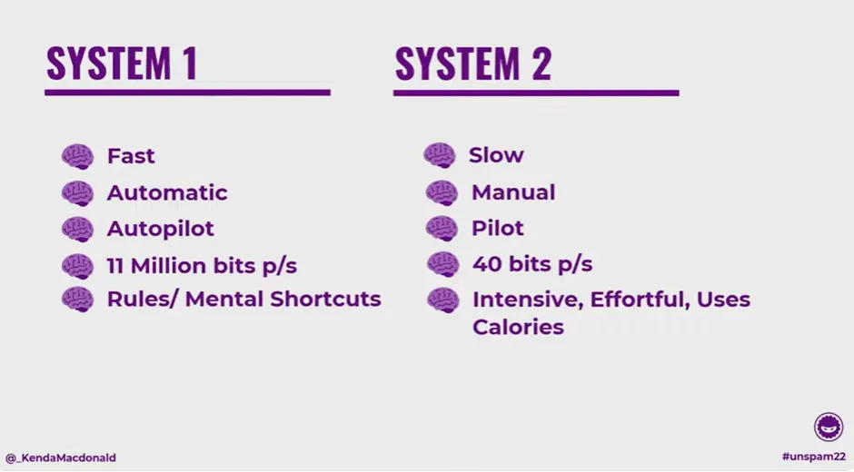
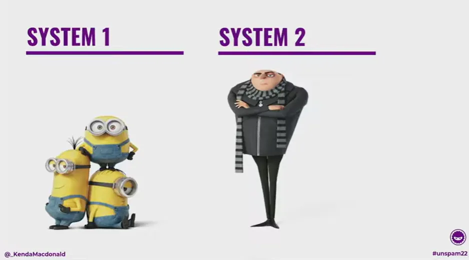
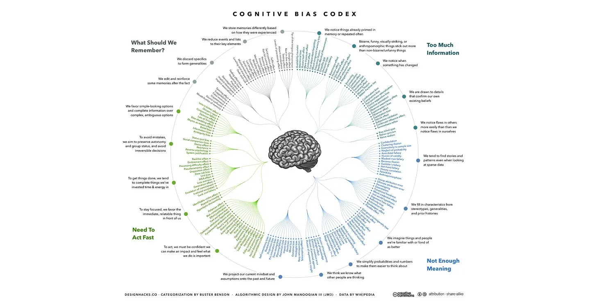
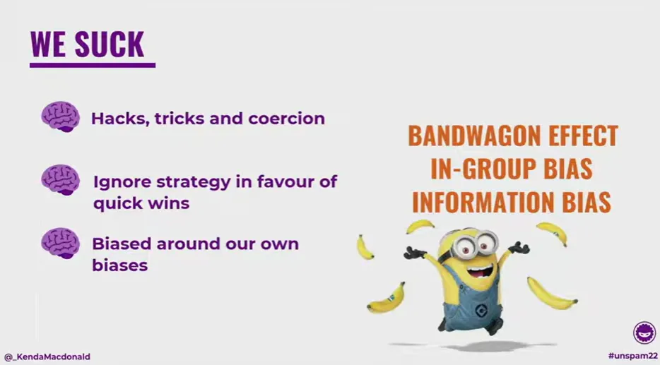
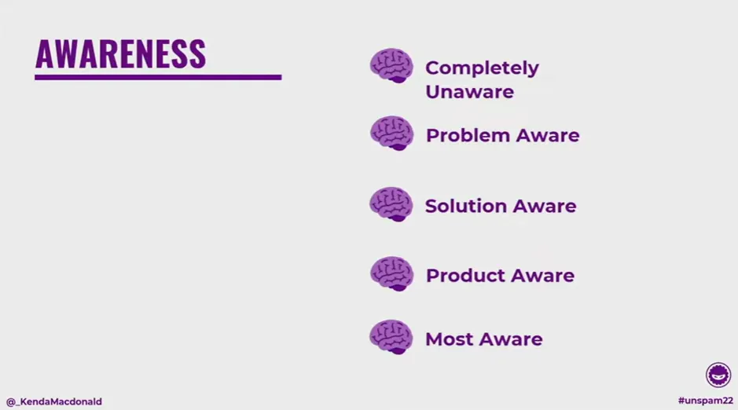

How do you write emails that outsmart the brain?
For Kenda McDonald, it starts with behavioral science, bold storytelling, and a touch of chaos. A forensic-psychology-turned-marketer and founder of Automation Ninjas, Kenda explores how cognitive bias shapes every click, open, and buying decision—and how smart email design can work with the brain, not against it.
In this session, she delves into how our brains actually make decisions, why most marketing efforts fall short, and what you can do to craft emails that feel human, helpful, and impossible to ignore. If you work in email marketing, behavioral design, or conversion strategy, this talk will prompt you to reconsider how your audience reads, reacts, and makes decisions.
TL;DR
- Design for how the brain really works
- Help readers think, don’t trick the
- Simplicity beats cleverness every time
- Context builds trust and clicks
- Small shifts, big conversion wins
- Keep it minion-friendly
We’re here to take a little tour through how we can, you know, fight brains with a little bit of email shenanigans, which is quite exciting. But really, we’re talking about cognitive bias. As we proceed, please don't hesitate to ask questions at the end and reflect on the material. Also, before I forget—because, say, I’m gonna fucking forget—there is a cheat sheet right at the end that you guys can opt in for and then unsubscribe from afterward. That’s okay. But there’s a cheat sheet for when we get into the cognitive bias nitty-gritty stuff, in case your hands get… You know, because I tend to go a bit fast. Alright, so you guys can have that toward the end, so don’t worry too much about taking notes. We’re going to discuss how brains make decisions, how cognitive biases can impact the decision-making process, and the role email plays in helping us make better, more informed decisions. Also, about how we’re all assholes in this room, okay? So we’re gonna talk about that. That’s the scene set—let’s rock and roll.
Because you don’t have enough pictures of my face already, here’s another one. I’m Kenda McDonald, and I am the CEO and founder of Automation Ninjas. We are a behavioral marketing automation agency. Everybody’s like, “What does that mean?” Basically, it means that my background is in forensic psychology—that’s what I originally studied. I was supposed to pursue criminal profiling, but then I got sidetracked by marketing, which is actually quite interesting. Maybe, or maybe super nerdy. What my agency does is help people understand how the brain makes decisions—how it actually works when it comes to making purchase decisions—and what that means for your marketing and the way you structure things.
I’m also the author of the bestselling book "Hack the Buyer Brain," which is quite nice to say. It’s all about how we evolved to survive, not to buy stuff online, and the implications that have for your marketing. Are we seeing a trend here? A theme emerging as we go through things? I’m also a professor—I lecture at a couple of universities because I don’t have enough to do—and I talk about brain stuff. But what I really spend most of my day doing is building pretty flowcharts, because everyone loves a color-coded flowchart, right? I help people understand how the way we make decisions and pay attention affects our marketing, and what we need to do to make changes.
What I want you guys to take away from all this is that, from what I’ve seen with the hundreds of clients I’ve worked with over the years, people don’t really understand how buying is a massive decision-making process—and we have to reverse-engineer from that. One of the problems we face in email (email marketing being a major component of our work) is that we’ve siloed ourselves away from the actual purchasing process. We tend to get completely distracted thinking, “Oh, this email’s gotta look beautiful, it’s gotta have this, it’s gotta do that, the subject line’s gotta say this…” and we forget that it’s part of a much bigger marketing process. Email plays an important and integral role in helping people make informed decisions.
Unfortunately, our brains are kind of like trash pandas. Everyone knows raccoons, right? I love raccoons—their little hands, and how they wash everything obsessively. Effectively, our brains are kind of like that, but worse. We’re like the raccoon that’s found the crack house, gone through their bins, and found a stash of methamphetamine. That’s basically what we’re like when we make decisions. We are absolutely the worst. So when it comes to making a decision, there’s all this complicated stuff that gets involved—and we’re also trash pandas on crack. We’re not doing a great job. I want to show you exactly how complicated decisions are.

First and foremost, decision-making involves decision-making, right? I know—psychologists love to break everything down into stupid component parts. But when we’re making decisions, we’re trying to figure out how accurate our judgment is going to be. So we’re aiming for accuracy.
With purchases, we also have problem-solving. Generally, we buy a product to solve a problem we have, so now we need to ask: how do we actually solve that problem? What’s the process we need to go through? We’re undertaking a comprehensive journey to determine whether the product is the right solution.
On top of that, we’ve got judgment—figuring out whether something is the appropriate option from a myriad of options. We need to assess the accuracy of the decision and the implications of making an incorrect one.
Then we’ve got the really nerdy bit: deductive and inductive reasoning. Deductive reasoning—well, we’re in London, so think Sherlock Holmes. You’ve got clues in front of you; you deduce that something is going to happen based on what’s laid out in front of you—nice and logical, boom. That’s not how the brain works.
Effectively, we have all this logical information in front of us, and we make decisions based on it; however, inductive reasoning also comes into play. Inductive reasoning is when we make logical leaps. We stereotype, generalize, and make decisions based on our feelings about things. That’s not logical. Spock would be very unhappy with all of us. As we go through this process, we employ both deductive and inductive reasoning to determine whether something is good, bad, or a logical option for us to pursue. We’ve got all this going on in our little trash panda minds, and it would be great if we were super logical about it—if we worked through everything in a specific way and always came out with the same options and reasons. But that’s absolutely not what we do, because the brain, at the end of the day, is not our friend. The brain evolved to survive—that’s it. It evolved to get your genes to the next day in the most efficient way possible. As a result, it performs some rather random functions in modern life, which is not what it evolved for at all. Our brains are flawed in several ways.

The first and worst thing we do is save calories lazily. We absolutely do not want to use calories. You use calories, you decrease your chances of survival. You’re not passing your genes on efficiently to the next generation. And if you go back even just a couple of hundred years—and in many parts of the world where people aren’t as privileged as we are—saving calories is really important. When we’re making decisions and just going through day-to-day life, think about how much energy your brain uses. It’s creating electrical impulses by burning fat. That’s fucking amazing, right? The brain is so cool. Maybe not everyone thinks that, but I do. We want to minimize that energy use because the more calories you use, the more you deplete your fat resources, and the more your body panics and wants to store fat. So we don’t want to use our brains as much as we can. We do cool stuff like “hill climbing.” Hill climbing is when we have to make a complicated decision, and the brain goes, “That’s a lot of resources, a lot of cognitive load. I don’t want to do that.” So it substitutes a smaller goal—it sneaks it in and goes, “Ha! I’ve just saved you a lot of effort.”
Let’s see how that applies to real life. Say you have to buy a house. You need a mortgage, you have to decide which banks to apply to, and which mortgage policy to choose. They give you a ton of documentation, and you’ve got to read through it all to figure out what’s important. Your brain goes, “Nope, we’re not doing that today.” Instead, it says, “You know, HSBC had that really cool ad with that celebrity I like. I liked that branding, so that’s the one I’ll choose.” It doesn’t tell you that’s what’s happening—you just look at HSBC and feel warm, fuzzy feelings. That’s the one you end up choosing. That’s totally inappropriate, but that’s hill climbing happening in the background, saving calories without you even realizing it.
We do other stuff too. We transfer and we conflate.
Transferring is when we take a previous emotional experience and apply it to now. “I had a bad experience doing that, so I’m guarded and defensive going into this situation.” That’s part of why we don’t like speaking to salespeople—we might have had a bad experience before, and now we’re scared it’ll happen again. “I don’t want to reach out to customer support. I’m a millennial. I don’t want to pick up the phone—ever.” I don’t even know what bad experience I had, but I’m not talking to you on the phone. Please text me. Unless you’re dying—then text me twice, okay? So I can say goodbye. Conflating is when you take two things that aren’t supposed to go together and smoosh them together. They probably shouldn’t be, but you’re saving information, saving processing power, saving capacity.
Then we condense information—we break it down into chunks so we don’t have to think about everything this person on stage is telling us. We just take away a few main points. That’s why there’s a cheat sheet at the end: I want you to take away specific information. And then we satisfice. Satisficing, for me, is the worst thing we do. It’s when we have a criterion we’re looking for when making a decision, and as soon as we meet that criterion in the most satisfactory way possible, we go, “Okay, I’m done.” We don’t continue to find the best possible option—we settle for what we have.
The brain tends to satisfice in most situations. Then we generalize and double down as well.
Generalization—that’s where stereotypes come in, all the racial profiling society loves to do. Doubling down—we like to store information we already have, we don’t seek new information, and we disregard anything that contradicts what we believe. The brain is actually detrimental to us, not just as businesses trying to sell a product or service, but also as consumers trying to make decisions. Our brains are real dickheads at the end of the day. And all of this is happening because of our cognitive biases. I like to think of cognitive biases as the crack that the trash pandas found around the back of that dodgy house. Cognitive biases are there to help us save and process.
Gavin’s laughing—and the reason I’m using this analogy is because I’ve had a lot of caffeine today, and Gavin asked me whether I was on crack. I was like, “No, Gavin, I just have ADHD. I’m like this all the time.” So it’s his fault. If you keep hearing the word “crack” and it’s triggering, blame him, not me. Effectively, biases save us processing capacity all the time. But a bias is a corruption that happens when our brain takes shortcuts. It’s an error—a mistake—that means we don’t make logical conclusions when we’re trying to save on processing capacity, even when we’re trying to make a good choice.
We’re trying to do it efficiently. We’re trying to use as few calories as possible, and boom, we make a mistake because our brain is using a bias. Biases are the psychological tendencies that psychologists have identified as common patterns of human behavior. “The people,” I say, as if I’m not one of them. I don’t know what that says about me. Let’s discuss how biases actually occur. We have a concept called dual process theory, which explains how we perceive information from the world around us and how we utilize that information to make decisions. There were two fantastic guys, Amos Tversky and Daniel Kahneman. They’re Nobel Prize–winning psychologists. They won the Nobel Prize in Economics because they were able to show that, while we take in information in two different ways and use it to make decisions, we also make identifiable mistakes—continually. Those are cognitive biases. They showed, for the first time in the 1970s, that we don’t make logical decisions. We make fundamentally flawed decisions, and we do so in repeatable ways. That’s what they won the Nobel Prize for—because for the first time, when behavioral economics was born, we could finally say, “Right. Brains are dickheads, and we need to do something about it.” That’s what they should have called their book, too, I think.
So effectively, dual process theory works like this: we have two systems that we use to take in information from all around us—System 1 and System 2.

System 1 is super fast, while System 2 is much slower. Hence, their book, Thinking, Fast and Slow. These guys are super inventive, right? They really need some branding help.
System 1 is so fast it could basically be called automatic—it runs in the background and does its thing. System 2 is the much more manual process we use for high-level decision-making. They like to call System 1 “the autopilot” and System 2 “the pilot,” which shows you how they weighted their importance.
The challenge here is that we don’t have access to the autopilot. It runs in the background and operates independently. The pilot is the person we like to think of as us—the person who’s hopefully paying attention right now, even though it’s the afternoon and I’m standing between you and alcohol and mini golf. Effectively, the pilot is how we like to think of ourselves. The challenge, however, is that System 1 processes 11 million bits of information per second. That’s a lot of information—like, a lot. System 2 only takes in about 40 bits of information per second. So if we think of ourselves as these pilots, feeling in control of our destiny, who’s really in control? It’s the trash pandas. That’s not a good time. I mean, it is if you’re me, but hey-ho.
So we have these two systems. System 1 can process that much information per second because it employs a series of rules and mental shortcuts to comprehend the world, categorize information, and make decisions. System 2, on the other hand, is intensive, effortful, and—of course—it uses calories. The brain does not want to use System 2 at all costs.
Now, when we talk about dual process theory, people often get hung up on the word “theory.” If you’re a scientist, you know that’s nothing to worry about, but I wanted to show you some neuroscience evidence that helps us see how different parts of the brain interact. I wanted to show you a cognitive bias actually happening in real time. This experiment was conducted by Goel and Dolan in 2013. Thankfully, we now have lovely fMRI scanners in universities, which have provided us with some very exciting insights into the field of neuroscience. They had people participate in a syllogism experiment—a reasoning exercise. So, I want everyone to indulge me for a second: I want you all to say “syllogism.” Ready? One, two, three—syllogism. Don’t you feel great? Isn’t that the most ridiculous word you’ve ever heard? Syllogism. I love it. I think it’s ridiculous. Thank you for indulging my strange tendencies.
A syllogism is an interesting logical fallacy that we often encounter. The idea is: if A equals B and B equals C, then A equals C. Right? That’s a syllogism. Here’s how it works in real life. Let’s say I phone you and say, “I’ve just found an injured bird in the road. It’s medium-sized and black. What do I do?” Now, pretty much everyone in the room has a picture of a bird in their head. Where did that come from? I haven’t given you enough information to decide whether that’s a blackbird or a crow—and those are the two things people usually imagine. Depending on where you’re from in the world, that’s a syllogism. It’s your brain extrapolating from small amounts of information and coming up with what it thinks is a logical conclusion. (That’s the sound effect, by the way, when you make decisions.)
So, what Goel and Dolan did was give people insufficient information—just as I have done—so that their belief would become involved and create a reasoning statement, essentially causing a bias. Then they gave people enough information so that it wouldn’t happen. They ran both conditions, and different parts of the brain fired depending on the context. When people had enough information to avoid making a mistake, that was System 2 firing—belief-neutral reasoning. When they didn’t have enough information and cognitive bias got involved, an entirely different part of the brain fired—belief-laden reasoning.
Then they went a bit further. They conducted trials where they inhibited that activity in various ways. This provided us with the first real evidence of what’s happening in the brain when cognitive bias is involved, and the first concrete proof of the two different systems we use to understand the world around us. Now, I don’t like talking about System 1 and System 2 in that way because, frankly, it’s confusing, and I’m not that clever. So I like to think about System 1 as the minions from Despicable Me, and System 2 as Gru from Despicable Me.

So, effectively—and I think we’re all familiar with it—the hero of the movie is Gru, this criminal mastermind with big plans to take over the world. But he can only do so much. He’s only got two hands. So he either employs or enslaves this little race of yellow people who run around and do all the stuff for him. The problem with the minions is that they’re not very bright. It’s one minion, one job—one uses a spanner, another uses a hammer—and it’s fine because there are thousands of them running around doing the stuff. Except they fuck things up—all the time. Catastrophically.
That’s your brain. Woo! Exciting, isn’t it? The minions tripping over themselves and making mistakes—that’s cognitive bias. The rest of the time, it’s our heuristics: the rules we have in place to understand the world. This is exactly how our brain works. The challenge with marketing is that we always create marketing for Gru. But we only spend about 15% of our day in Gru mode. The other 85% of the time, we’re in minion mode—and the minions are the gatekeepers to Gru’s attention. When Gru wants something—say, he wants to figure out what “syllogism” actually means—he goes and types that into Google, and the search results pop up. Forty bits of information per second isn’t even enough capacity to read a full page. Not even close. The minions go through the page and pick out the information you’ll actually pay attention to.
They decide first what you’ll actively notice. That’s terrifying, because they make mistakes all the time. So we have to be marketing to System 1—that’s our job: to market to the minions. And they’re going to fuck things up the entire time. The little mistakes they make are cognitive biases. The minions rule. They control our attention. They control what we do with our attention. They get involved in decision-making, and the whole time, the brain is desperate to use them instead of System 2. It’s desperate to go through rules and shortcuts instead of using actual processing power—calories. The challenge is that those minions are going to make mistakes the whole time this is happening, and those mistakes are going to ruin your conversion rates. They’ll give us—and our consumers—a bad time.

So, effectively, we have all the biases, right? We have identified over 300 different cognitive biases, with about 120 of them repeatedly replicating in the studies. Additionally, notable research was conducted by Buster Benson. He compiled information about approximately 120 biases and categorized them into various groups where those biases are likely to occur. We have biases that occur when we need to remember something, whether we are encoding or recalling that information. We have biases that occur when there’s too much information available, and we struggle to make decisions, leading to overwhelming feelings. We have biases that occur when we need to act quickly and make decisions rapidly. We also have biases that occur when we lack sufficient meaning and context.
Now, when you think about each of those four categories, and they are not going to happen in isolation either, all of them are going to get involved when you’re making a decision and when you’re marketing to your audience. All of them are going to get involved. Cognitive biases will always be present. And this is why I am not going to stand up here and tell you what the top 10 biases are that you can manipulate to influence an audience's decision. It’s not fucking possible. They are going to cascade off one another, they are all going to get involved together, and they are all just going to ruin absolutely everything for you. That’s my message. I’ll leave now. So, effectively, we have these four different categories that get involved. We know that’s going to happen. Bias is likely to occur, and it will negatively impact your conversion rates. We’re clear on that. I wanted to show you five individual biases to drive the point home, and also because it’s kind of fun to examine biases closely. We all get a bit nerdy about this, right?
First, confirmation bias. Confirmation bias is closely linked to the fact that we encode information, and once that information is in memory, our brain does not want to replace it with new information or add more unless it matches the existing information, as this saves processing power. This is responsible for many of the issues we had with people doubling down on incorrect information during the Trump campaign and in many instances related to COVID. This is responsible for people coming up with crazy theories and conspiracy theories that they repeatedly reinforce. The worst thing about it is that it will not just look at option A and option B and say, “Okay, option A leans toward the information that I want.” We will even take ambiguous information that is neither option A nor option B and go, “This is mine. This supports my opinion.” It does not. We will skew the data to match our opinions because we are so desperate to save on processing power. Confirmation bias is a particularly challenging bias to overcome.
If your audience is already holding contradictory information and you provide them with additional contradictory information, both contradicting what they already believe and what your competitors are telling them, you will have a difficult time overcoming confirmation bias, as they will be less likely to listen to you. Most of the time, the minions are just going to filter you out completely, and you are not going to get paid attention to. One of the best things you can do is make someone think it was their own idea. That’s the sneaky little trick that all women know when we’re arguing. In this situation, we will provide people with resources, such as buyer’s guides, and encourage them to engage in critical thinking. If someone is involved in critical thinking, you have the capability to get them to weigh things up. If you get them to opt in for something where they want more information on how to make the right choice between things, and you get them to fill out their own table comparing stuff, you are going to get them to think critically, and you are going to increase the chances of them being able to overcome confirmation bias. It is a particularly insidious bias that becomes deeply ingrained.
Then we have the ambiguity bias. We hate ambiguous information. We absolutely cannot stand it. It makes sense from an evolutionary standpoint. If I said to you, “We’ve got two paths we could go down. This path is really fun because you might encounter lions, dragons, and even sharks with laser beams. We might die, but we might also get to the end, maybe, who knows, I don’t know what’s down there.” And then you have path B, which goes around the corner, and then you’re there, and you get home safe, and you don’t get eaten by sharks. Which one are you going to choose? It’s a very specific example, admittedly, but from an evolutionary standpoint, anything that has an unknown in it is dangerous, and you might die. We will choose anything that is concrete and clear. That means that even if your option is better than the competitor’s, because you have been ambiguous about the process and the cost, people will not choose you.
Please put your fucking pricing on your website, or at least tell people what goes into the pricing and what the constraints are. If you can’t disclose the actual pricing, explain the steps for onboarding and outline the process for purchasing from you. People are interested in that when they are deciding to buy something. They want to know all the details. If you are ambiguous, even if your offer is better than someone else’s and they are clear, they will choose them over you. So, ambiguity bias is a significant conversion killer, and it definitely saddens me when you see beautiful sales pages and materials, only to reach a point where you don't have enough information to make a decision. Sort that out.
Number three, we have anecdotal fallacies. An anecdotal fallacy is when anecdotes, little stories, and snippets from somebody else override better evidence. “My brother’s sister’s wife’s daughter told me this thing,” and I believe that over what the doctor said, or over what the news said, or over what the government has said in a campaign. We are drawn toward stories. For hundreds and thousands of years, we have passed information from person to person through storytelling. Even in this room, we have had mirror neurons firing. When someone tells their story and shows you what they are going through, and you see emotion happen in someone else, the only way we can understand something is that our brain has to emulate that thing happening to us. That is how we understand the context and emotions of others. We have mirror neurons that fire when someone is telling their story. This is why vulnerability is so important. That is empathy in us, as we understand someone else’s emotions by our brain going through the same process of having that emotion.
So, when you tell a story and provide people with context through data, and they can see a person and understand that context, those anecdotes become really important. We encode that in a better and stronger way than we do a testimonial that says, “I got a five-times ROI.” When creating case studies, they should be hero-led. When you have testimonials, for fuck’s sake, put a picture on it. Show me the person’s face. I need to see the face so I can activate the mirror neurons. Also, put little snippets of stories inside. If you have content that is heavily data-driven, consider incorporating stories into it. There is a reason storytelling is so powerful in copywriting. I love anecdotal fallacy.
Then we have loss aversion. I bet everybody has done this, right? The worst thing about knowing a lot about cognitive biases is that you can see your own bad behavior and think, “Oh, fuck, I did it,” but it was good and I enjoyed it while I was doing it. Loss aversion occurs when we feel the pain of losing something more intensely than the pleasure of gaining something. Put it in number terms. Let’s say losing out on free shipping is five points, and you get minus five points when you lose out on shipping. Getting free shipping is three points. We do not feel them equally. We feel the loss of something unevenly. From an evolutionary standpoint, it makes sense. You lose resources, you could die. That is what the brain is thinking.
Loss aversion is something we need to be aware of when people compare us to our competitors. They might be losing out on something by choosing us. They might be losing out on something our competitors are promising on their websites. People are not making decisions about you in a vacuum. Even if you are not talking about your competition, they are likely looking elsewhere. We are in the research age. We have all the information available to us. Loss aversion is something we need to be really clear about. We need to show people the risks associated with something, the gains, and how it works out. “Clear is kind,” as the Brené Brown quote goes. Where are you, Matthew? I see you. So, loss aversion is something we need to be careful of. We need to consider how we structure it on our sales pages and how we help people understand what they will lose versus the benefits they will gain.
And then we have number five, the availability heuristic. The availability heuristic is effective when we encode information into our memory and can easily recall it. The brain goes, “That information’s really important.” It might not be important. It might just be easy to recall because we’ve recently had a certain experience or because we’ve seen an advert from BMW several times. Just because we can recall information easily doesn’t mean it’s more important, but the brain certainly thinks it is. This is why companies like Nike and BMW conduct massive awareness campaigns, utilizing the mere exposure effect to increase frequency. As a result, we like it more, and we like it more because it’s easier to recall. And why do we like that? Because we’re lazy brains, right? If we can easily recall information, then it must be more important. But if you think about how that applies to you, can people easily recall your product offerings, your service offerings? Why do you think content marketing works so fantastically?
We’re showing up in people’s emails and helping them repeatedly with a product and service offering. Then we’re taking advantage of the availability heuristic. However, if we’re not helping and are just showing up with sales messages, we’re negatively impacting the availability heuristic, and we’re evoking a negative emotion in response. Therefore, it’s crucial to incorporate a bit of science to make yourself more appealing to your audience. First of all, I’m really sorry to hear that you need science validation for that. We should just be nice to people. However, the availability heuristic is one factor that can help you out.
Okay, so that’s our cognitive biases for your audience. But I want to do one for us, right? This is number six, bonus round. This has a profoundly negative impact on us. This is the curse of knowledge. For example, you’ve got a policeman. He’s explaining to some dude how to get somewhere, and it’s so clear in his mind because he knows the layout of the streets super well. But the person who is a stranger and who is lost has no fucking clue what’s going on. When we’re talking to our audiences, we do this all the time because we’re experts in our products, services, and offerings. We forget that we’re talking to them on a different level. Part of the reason they are prospects is that they need to reach that level. Our job is to put ourselves in their shoes and help them understand why we do things the way we do. The curse of knowledge is something that will negatively affect us and hinder our conversions because we’re not communicating with people in the way they need to be spoken to.

Alright. Now, everybody ready for my soapbox? Everybody ready for me to get real mad? I’m a bit of a dickhead. You are all definitely dickheads. And marketing as an industry is a collective bag of dicks. This is where the code of conduct comes in. You’re not allowed to get offended, or if you’re going to get offended, it’s here. But yes, we are all assholes, completely. And marketing sucks for a lot of different reasons, but most of all, if you give us a channel, we’re going to ruin it. Take a look at what we did with Facebook. It was a cool place to hang out, and then we fucked that right up. And do you know what? We had the audacity to go, “It’s broken. I don’t like it anymore. Give me something else.” We had the audacity to do that after we fucked it completely. Marketers, we did that. Anytime you see a grouping of people together, we’re going to be like, “Yeah, we can market to them. Woo, exciting.” Anytime. We are definitely dickheads for that. Also, you give us a cognitive bias, we are going to exploit the shit out of that. We are going to be like, “Whoa, they’re making mistakes, that’s my opportunity to get in there. Y boy.” That’s what we do. We all say “y boy” a lot, because that’s definitely something I say all the time. We are not good when it comes to our audiences. We love manipulating people into doing things that they wouldn’t necessarily do in a perfect situation.
Every time I go to a conference and I see a talk about cognitive biases, it’s always like, “Here are 10 cognitive biases you can use to get people to do things they don’t want to do.” And I’m like, “You’re a dickhead.” And we’re all dickheads because we love that shit. Why are we all here? We’re all here to find out how we can manipulate people into doing stuff they don’t want to do, right? That makes us total assholes. But I’m going to go deeper. We suck for a couple of different reasons. First, we love hacks, tricks, and coercions. We show up for that shit all the time. We love tricking people into doing stuff. We also ignore strategy in favor of quick wins. Now, fair enough, everyone loves a quick win. And, fair enough, our KPIs as an industry are fundamentally flawed. We should focus on customer lifetime value, not the conversion that has just occurred.
We have significant challenges that, as an industry, we need to change. However, we’re also biased by our own biases, particularly the bandwagon effect. TikTok is a new and exciting platform. It’s not new and exciting anymore, but when it was, everybody was like, “Oh my God, I also need to dance like an idiot. I need to do that. That’s going to help me sell more shit.” No, it’s not. We jump on the bandwagon because somebody else over there looks like they’re succeeding with it. This is what blows my mind. We don’t even know that they’re succeeding. They just look like they might be. So we’re like, “Oh, fuck yeah, I’m going to do that thing immediately.” We also get in-group bias, and this is in part why I’m standing on my little soapbox right now. Everybody’s doing it, and because everybody in the in-group and everybody in email is doing that little trick to get people to click on something, it’s okay for me to do it. Now I’m going to stand here and say, really clearly: utilizing cognitive biases to increase your conversion rates is morally and ethically repugnant. And we are bad, and we should feel bad about it.
All of us. We’re all just going to have a group cry now, like in Midsommar, that creepy-ass movie, right? No. However, it is bad, and we should feel bad about it. And you’ll notice that when I’ve been discussing cognitive biases, I haven't mentioned the five cognitive biases that can significantly increase your conversion rates. I’ve told you the ones that are ruining your conversion rates. And every time I’ve referred to them, I’ve referred to them as categories of biases, because the biases group together and cascade off one another. We can’t really manipulate people in the way we think we can. Often, our experiments aren’t repeatable. It could be anything affecting that. Ultimately, cognitive biases are mistakes the brain makes, and we should not coerce people into doing things. Instead, we should focus on helping people make conscious decisions and take action. And if I have to give you a financial reason for it: if you help people own their own decision-making process, they are more likely to be loyal customers, and you will increase your customer lifetime value. I shouldn’t have to provide a financial reason, but if I do, that is the reason. You will make more money if you are nice to people.
We also have information bias, and information bias is probably the worst one. We believe we require a substantial amount of information to make a decision, and even once we have enough information, we continue to research it obsessively. We are total research whores. Information bias is definitely my problem. I am currently writing my second book. How long do you think I have been researching it? Only three years. Do I need to carry on researching it? Absolutely fucking not. Do I have three psychology textbooks that are about this thick that I need to read? Yes. Information bias is a baddie. At the end of the day, we’re ruined by our own minions in the industry, and we’re just trying to do the best we can to get by. But now that I’ve told you why you suck, you can stop sucking. It is our responsibility now to stop. We’ve drawn the line. Once you leave here, you’re contractually obligated to be a nicer human being. We just said that. Now I’m going to see a bunch of people not leave the room, set up little tents in the corner, and say, “No, I want to hold my cognitive biases.”
Okay, so let’s talk about how we can get rid of biases, because we should be de-biasing instead of focusing on manipulating biases. If we consider those four categories, the first category contains too much information. When we know our audience is going to be presented with too much information, we know a couple of things are going to happen. First, we will filter out the information. The brain is going to go, “Too much, can’t handle it, let’s focus on smaller parts.” What is it going to filter? I don’t know. Whatever it decides to filter at that point in time. We don’t have control over that. The brain is just going to, and it might not filter out the nonsense. It might filter out some very important information because it wasn’t in a font color they liked. It could be anything they decide to filter out.
The other thing that’s going to happen is it’s going to pick the most meaningful bits. That’s not necessarily what’s actually meaningful to you. It’s just whatever the minions decide is meaningful, which could be a banana at that point in time. We are drawn to things that stand out and are amusing, which is something marketing often utilizes. We like to use things that look totally different, but then everybody starts to make things that look totally different, and then you have to find something else that looks totally different, and it’s something we can’t rely on. In memory or repeated often. This is the copywriting rule of three: tell them what you are going to tell them, tell them the thing, and then tell them what you have just told them. There is a reason that it works, and the availability heuristic is something you have to thank for that.
And of course, we like to confirm our own beliefs. Now, if you ever know that your audience will have too much information, there are two specific things you can do. First, you can simplify. You can create summary boxes. You can provide people with additional information and context about something. And the second is that you can repeat. Apply the copywriting rule of three, especially if you are encouraging them to click through from an email to something else. Reduce that transitional velocity between clicking through from the email and landing on a landing page.
What about when we don't have enough meaning? When we lack meaning, the first thing we do is connect the dots. Dots that probably do not exist. We will create them if needed, as we are eager to find stories in sparse data. We want meaning. We are constantly seeking meaning. We will also generalize and fill in characteristics or stereotypes. We will employ various measures to conserve processing power. We will oversimplify numbers and data. Do not kill your audience with data, for God’s sake. Even if they are nerds, provide them with context as you are doing it. And, of course, we will project, and we will always try to take some information from something else and project it onto something new.
If you are suffering from a lack of meaning, the very obvious solution, I am sorry to say, is that we need to provide meaning. Do not wait for your audience to divine their own meaning. You tell them exactly the meaning you want them to take away. Make it easy for the brain. Reduce the cognitive demand. Tell them what they should be taking away from that. You are the expert.
Then be really explicit with stuff. Do not beat around the bush. This is the advantage of being South African. We do not beat around the bush. We just set it on fire and then see what is left afterward. So we make great copywriters. No, I am joking. I mean, we do, but we swear a lot. You need to be really explicit in your copywriting. Provide that meaning, but also do not let them take away additional stuff. Make your calls to action really clear. Tell them exactly what you want them to do. Do not let the brain wander off, and let the minions try to decide what they should be doing. Okay, but what about when we need to act fast? This is probably the worst one. This is the one I see marketers use most frequently. We try to add a sense of urgency to encourage people to make a decision. Why are they not making a decision? Previously, it was probably because your work was not good enough. And now we decide to pressure them, hoping they won't notice all the flaws. Quick, limited-time deal. Go, go, go. Yes, I know that it works, but that does not mean it is a good thing to do.
The first thing we should do when we need to act quickly is to be overconfident in our own abilities. We have all been in that meeting where someone has said, “Can you do that thing by then?” and we have been like, “Yeah, yeah, I can do that.” You get off the phone and you are like, “What the fuck? I cannot do that at all.” But it is a stress response. If you do not say yes, you might die, right? So we will be overconfident in our own abilities. When you pressure people into doing something, they often develop overconfidence, which can lead to their being unable to perform the task afterward. This can result in them being unhappy customers.
They will also favor the immediate and the most relatable over anything else. We like short-term gains. We find it really hard to think long-term as a species because we are getting to the next day. So, try to help people see what they can get immediately and what the next immediate step is.
We also prefer completion over anything else. This is the sunk cost fallacy. If somebody is already partway through implementing something else and you are trying to get them to switch providers or do something else, you have to make it hellishly easy. Otherwise, we will not do it. Bulb was an energy provider in the UK until recently, due to the energy crisis and subsequent shutdown. I think they are now owned by EDF. They did this amazingly. They introduced into the industry the concept of “We will switch all your stuff for you.” You did not have to do that. They made it really easy to change providers. They dealt with everything. You just had to sign the contract. That was it. It was an effective way to overcome the sunk cost fallacy, as people have invested time and effort into something and do not want to redirect that effort elsewhere. We also prefer autonomy and status if we have to act quickly. We like to be in control, but we also do not want to disrupt the status quo too much. Be aware of that. We want to be rebels, but not too rebellious. Especially in the UK. And we like to avoid ambiguity, because we might die.
If you know your audience needs to act faster and make a time-pressured decision, summarize information. Credit card companies have done this really well. When you have to make short-term loans, they give you a summary sheet at the end. That was something that came from Nudge, which is another great book. Also, Nudge is really interesting. Remember that Nudge, as a book, was written to help people make better decisions, and marketers went, “Hey, I see you over there. I can manipulate the living shit out of you. We can do that.” This is exactly why we are nasty people. Summarize and highlight information whenever possible. Or high li. That is interesting. You did not spot that one, Jess. She spotted two other spelling mistakes that I had not asked her to correct. She was just like, “I have been through your slides, and you spell like a dickhead. I am going to fix that for you.” She did not spot that one, though. It is “highlighted” as well. There are so many things in there that we could have caught, but hey, we missed it. We missed it so bad.
If we need to act fast, summarize and highlight the appropriate information for people. And then, if we need to either encode new information or recall existing information, several things will happen. We will keep only what is useful. Again, it might not be useful at all. It's possible that an option had a particularly attractive picture associated with it, and I liked that picture, so I chose that option. We will also select a few items and discard the rest, so we will not be overwhelmed by all the information. We like to save space. So again, confirmation bias in there, and we will transfer and conflate things. If you know that we have to recall or encode information, keep it simple. Keep it really easy for your audience to understand. Remember, there are minions at the end of the day, and show them the big picture.
Let's discuss big-picture concepts, starting with flowcharts. When it comes to actually utilizing this information and making it happen in real life, there are a couple of things we can do. First and foremost, we need to remember that email does not start at email, because your audience does not see your emails as an individual silo where this person created this, and the rest of the marketing does not matter. Our experience with you and your email begins at the start, when we begin consuming content. This flowchart, by the way, is the automation journey that we implement into businesses, and which we have won multiple awards for. You are more than welcome to steal it. It is also available on my website for your use. It is the process we use to implement marketing automation.
First and foremost, clicky. First and foremost, we utilize data-driven keywords to understand how people consume information. I think I am missing a picture. Yes, I am missing a picture at the beginning. There is supposed to be a large circle around that area at the front, specifically the orange section. If you are colorblind, I do not know what color you are seeing. Sorry. But this stuff at the top here. When people come to your content, we excel at creating SEO-optimized content and implementing various strategies, including keyword research, data-driven insights, and understanding search intent. We excel at doing that. But we do not do that with email. We never validate the types of content we send out via email. We rarely consider whether that is truly meaningful. We have conducted all that research to create content, so we should utilize that information to ensure the content we send to our audience is meaningful. So get involved with your SEO peeps. I know they are weird. It is okay. We are also really weird, just in a different way.
Then, when it comes to lead magnets, as people sign up for various lead magnets and opt-in points, we should mirror that content. We should focus on what they have signed up for to ensure we are providing them with a meaningful experience afterward. One thing we want to do is cascade awareness. We aim to guide people through awareness stages, which I will share with you shortly. I am not talking about awareness, consideration, and decision. I am referring to the actual awareness journey we undergo before making a purchase. When it comes to where email gets involved, when we are following up on the back of the lead magnet, for fuck’s sake, do not just send one email. I will burn all of you in the hellfires. I might. It was actually considered by Kamal that my title should be Demon, and I was like, I kind of like that. But do not send one email. You have to send multiple emails.
When you are doing that, add value on top of what they asked for. They are literally telling you, through their behavior, what they are interested in, where they are in their journey, and where they should be going next. Please do not ignore that, and only send one email and then add them to the newsletter. There is a reason someone signed up for that lead magnet. We need to add value beyond what they asked for. As we transition into sales, it is also missing. I am sad. Such pretty little galaxy circles. However, the sales block, the little blue block, I apologize for the color blindness. As you go through, people are particularly interested in the sales points, specifically in pricing and how you utilize your products. Avoid that ambiguity bias. They want to know about objections. People have objections not because they do not want to buy from you, but because they want to buy from you. It is our job in email to support sales through that process.
Additionally, if you are in B2B or B2G (business-to-government) and have extremely long sales cycles, or even for B2C with high purchase intent, when you have a sales series of six months or more, you should consider a sales motivational series. It is essentially bottom-of-funnel content that you send to people over an extended period. Not only are you helping people overcome ambiguity bias and the availability heuristic, but it also means sales can have more effective contextual sales conversations. You should really think about doing one of those.
Then, at the top right-hand corner, the long-term nurture. We should use search to validate interest in certain subtopics. We should not be sitting down thinking, “What the fuck am I going to create the newsletter on this month?” We should use the data we have available. We also want to cater all the content we create for awareness, and we want to do something really interesting, particularly with the way these slides are working now. I am blaming Jess because she changed. Yes, I am blaming Jess. It might not be your fault, but I blame you anyway.
What we want to do is track the long-term nurture. For any type of content you send over a longer period to a larger audience, use their engagement to segment them. I mean progressive profiling. If we are clever with the types of content we put inside those emails, we can learn progressively more about who they are and offer them the next appropriate step. Progressive profiling is not what HubSpot says it is, which is filling out a little more information on a form each time. It tracks people’s behavior and, depending on the behavior they display with your emails and on the website, offers them more of the appropriate next step. That is how you take one lead, especially in B2B, and turn it into multiple sales opportunities, because they will tell you, based on their behavior, what they are interested in. We do not have to guess. We never have to guess. How do we actually put that in real life? One thing we know the minions love, and if we want to keep them happy with our emails, is that they appreciate specificity. They absolutely love specificity because they have a job to do. They have been sent out to look for specific types of information, and if we can provide that information, then they are happy. But when we create content, what do we do? Just vaguely whatever the fuck we feel like. We do random acts of content. We throw content out there and hope some of it sticks.
We can avoid that from now on. Awareness as a journey is a concept created by Eugene Schwartz in the 1970s. He suggested it in his book Breakthrough Advertising. I use it because it is a slightly sexier version of the general buying process the brain undergoes before deciding to make a purchase. Psychology makes everything really boring, and marketers make things a little sexier, so I use his. Everyone starts out completely unaware that they have a problem. Then something amazing happens. There is a catalyst. Whatever the case may be, we suddenly become aware that we have a problem or an issue. This is what Google calls the “Zero Moment of Truth,” the point at which we turn to the internet for help or to our friends and families for more information. This is a massive research phase. We display a lot of search intent. We conduct extensive Google research, which enables us to learn a great deal about our problem and its associated challenges. We do not intend to purchase a product or service at this time. We are just looking for information.
Then something happens. We learn enough about our problem and its breadth and depth, and then we become solution-aware and start looking for solutions. We start looking for products. We start looking for things we might want to purchase and consume. As we become solution-aware, our search behavior changes significantly, and what is valuable to us changes accordingly. Now we are like, “Do I do it myself? Do I get someone else to do it? Do I bring someone in-house?” We examine various categories of solutions. Then we start to create our own criteria for what looks good and what does not, and what suits us. That criterion tips us into product awareness, where we go, “I want to do it myself. What are all the options, and what are the products and services available to do that specific thing?” That is when we start looking at individual brands and products, and again, our behavior changes, as what is valuable to us shifts because we are now comparing and contrasting options.

As we refine our criteria and discard everything else, we become most aware. Most aware is when we say, “I know what I want. Now I need to find the right provider.” We look at budgets, comparisons, reviews, case studies, and testimonials. Again, our behavior changes. When we apply this to SEO, SEOs are generally skilled at matching search intent to relevant content. I say pretty good because I speak at SEO conferences, and I know they are bad sometimes. In email, do we ever pay attention to that? Not a fuck. We do not. Someone signs up, and by virtue of what they sign up for, we know where they are in their journey. They tell us, based on what they are looking at, clicking on, and signing up for, exactly where they are and where they need to go next.
The challenge is that businesses tend to focus on this area. They tend to focus on the most aware, because that is where the decision is being made. That is the fun, juicy, exciting stuff. However, as we progress further along the journey, we encounter more people and develop greater relationship-building capabilities. We get an opportunity to help people in a more meaningful way. We also get a way to build customer lifetime value. One thing you can do is create content plans tailored to each of those individual stages, allowing for a progressive journey and enabling you to map your emails accordingly. You can track and segment individuals based on their sign-up preferences. You will know exactly the types of emails to send based on the content you provide. Additionally, you can create lead magnet ideas for each stage, which means that when someone consumes it, they need to progress to the next stage. There is no more debating whether we will send this this week and whether it is useful for the audience. Based on their behavior, they are telling you what they want.
So we need to make things minion-friendly. The best way we can do that is to make it easy. Provide context throughout, both for this step and the next. Preempt their behavior and control the frame and route they are taking to ensure it is as easy and contextual as possible. Okay, let us round that up because I know we are ready for mini golf. This is Friday night. First, be aware of bias and acknowledge that it is likely to occur. We cannot control for it, but we can mitigate it as best as possible. We can help people make more conscious decisions. Provide context all the time. Context is king when it comes to bias and helping people make appropriate decisions. Lean into consciousness, not coercion. Help people make better choices. Do not manipulate them. Do not be bad. Be good. Be a force for good, guys. And KIMF. Keep it minion-friendly throughout.